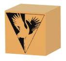

照明
有时当贴花与要应用贴花的表面共享相同的材料属性时，就会很难发现表面材料的反射度是否过高。
要解决这个问题，可以对贴花设置不同的照明。
有以下两类贴花照明类型：
-
继承材料
贴花将继承其应用表面的材料作为贴花的材料。

-
表面材料 = Gold
-
贴花材料 = Gold
-
-
使用贴花自身材料
可以指定贴花使用其自身材料。

-
表面材料 = Gold
-
贴花材料 = Plastic (nonreflective)
当您从照明类型列表中选择使用贴花自身材料时，编辑照明按钮变为可用，按这个按钮来进入材料编辑器，在此可以指派不同的材料类型。
-